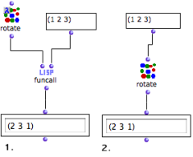
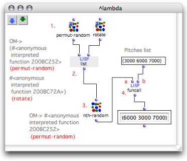

OpenMusic DocumentationHiérarchie de section : OM 6.6 User Manual > Visual Programming II > Higher-Order Functions > Using Functions as Data
OpenMusic DocumentationHiérarchie de section : OM 6.6 User Manual > Visual Programming II > Higher-Order Functions > Using Functions as Data
Navigation : page précédente | page suivante
Attention, votre navigateur ne supporte pas le javascript ou celui-ci à été désactivé. Certaines fonctionnalités de ce guide sont restreintes.
Lambda Mode Examples: Funcall - Using Functions as Data
Functional arguments are variables of higher-order functions and programs. Here is a way of applying higher-order programs and lambda mode in OM.
Applying a function via Funcall
It can sometimes be necessary to leave the choice of a function in a program. The call of the function, which is passed as data in the program is then delayed.
Funcall has two types of arguments :
its first argument is a function
its other arguments are additional - "rest" - arguments).
Funcall calls the function taking these additional arguments as parameters.

|
Rotate performs circular permutations upon a list : items are enumerated starting from the second element. In this example, rotate is applied to a simple list of numbers : (1 2 3).
The result of the computation is similar in both cases. We will however extend it to show how using a function as an actual variable . |
Random Selection of a Functions to Apply
Using lambda functions allows to choose between several functions, as if they were plain data.
We will modify a list of numbers with one of these two functions : permut-random or rotate.
Permut-random makes a random permutation of the elements of a list.
Rotate makes a circular permutation of the elements in the list (see previous example).
The function will be selected randomly, so that is becomes a random variable.

"Permut-random" is applied randomly to the list.
To use permut-random and rotate as variables, we have set them on "lambda" mode.
List makes a list with these two functions.
Nth-random picks one of the two functions in this list randomly.
Funcall applies the selected function to its second argument, the list of numbers.
Note
Setting the functions on "lambda" mode precisely allows to :
make a list with these two functions
choose one of them in this list like a "lambda item".
If the functions were not on "lambda" mode, the list function would return a list that contains the result of these functions call. |
{kind=link}
Références :
Plan :
Navigation : page précédente | page suivante
A propos...(c) Ircam - Centre Pompidou